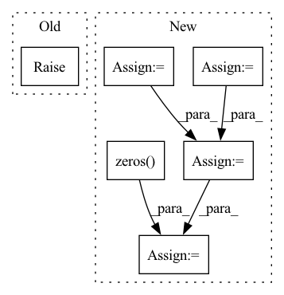

Pattern ID :19088
Before Change
Returns: values of Vee * psi
"""
raise NotImplementedError()
def nuclear_potential(self, pos):
"""Compute the potential of the wf pointsAfter Change
torch.tensor: values of the electon-electron energy at each sampling points
pot = torch.zeros( pos.shape[0], device=self.device)
for ielec1 in range(self.nelec - 1):
epos1 = pos[:, ielec1 *
self.ndim:(ielec1 + 1) * self.ndim]
for ielec2 in range(ielec1 + 1, self.nelec):
epos2 = pos[:, ielec2 *
self.ndim:(ielec2 + 1) * self.ndim]
r = torch.sqrt(((epos1 - epos2)**2).sum(1)) // + 1E-12
pot += (1. / r)
return pot.view(-1, 1)
def nuclear_potential(self, pos):In pattern: SUPERPATTERN
Frequency: 3
Non-data size: 6
Instances Fragment ID: 62199477
Project Name: nlesc-jcer/qmctorch
Commit Name: adaaa1ed349fb72bbacad1c74788252742eddbf5
Time: 2020-05-25
Author: nicolas.gm.renaud@gmail.com
File Name: qmctorch/wavefunction/wf_base.py
M Class Name: WaveFunction
N Class Name: WaveFunction
M Method Name: electronic_potential(2)
N Method Name: electronic_potential(2)
M Parent Class: torch.nn.Module
N Parent Class: torch.nn.Module
M File Name: qmctorch/wavefunction/wf_base.py
N File Name: qmctorch/wavefunction/wf_base.py
M Start Line: 41
M End Line: 41
N Start Line: 47
N End Line: 57
Before Change
def unsorted_segment_mean(x, segment_ids, num_segments):
raise NotImplementedError
def unsorted_segment_min(x, segment_ids, num_segments):After Change
if len(segment_ids.shape) == 1:
s = torch.prod(torch.tensor(x.shape[1:]))
segment_ids = segment_ids.repeat_interleave(s).view(segment_ids.shape[0], *x.shape[1:])
assert x.shape == segment_ids.shape, "data.shape and segment_ids.shape should be equal"
shape = [num_segments] + list(x.shape[1:])
ones_data = torch.ones_like(x, dtype=x.dtype)
tensor = torch.zeros( *shape, x.dtype) .scatter_add(0, segment_ids, x)
tensor_nums = torch.zeros(*shape, x.dtype).scatter_add(0, segment_ids, ones_data)
tensor = tensor / tensor_nums
return tensor
Fragment ID: 62199472
Project Name: tensorlayer/tensorlayerx
Commit Name: c65412794b3c56405fd6268ed7314a6e6881912f
Time: 2022-03-10
Author: jiaronghan@outlook.com
File Name: tensorlayerx/backend/ops/torch_backend.py
M Class Name: AnonimousClass
N Class Name: AnonimousClass
M Method Name: unsorted_segment_mean(3)
N Method Name: unsorted_segment_mean(3)
M Parent Class:
N Parent Class:
M File Name: tensorlayerx/backend/ops/torch_backend.py
N File Name: tensorlayerx/backend/ops/torch_backend.py
M Start Line: 1484
M End Line: 1484
N Start Line: 1541
N End Line: 1555
Before Change
Returns: values of Ven * psi
"""
raise NotImplementedError()
def nuclear_repulsion(self):
"""Compute the nuclear repulsion termAfter Change
torch.tensor: values of the electon-nuclear energy at each sampling points
p = torch.zeros( pos.shape[0], device=self.device)
for ielec in range(self.nelec):
istart = ielec * self.ndim
iend = (ielec + 1) * self.ndim
pelec = pos[:, istart:iend]
for iatom in range(self.natom):
patom = self.ao.atom_coords[iatom, :]
Z = self.ao.atomic_number[iatom]
r = torch.sqrt(((pelec - patom)**2).sum(1)) // + 1E-12
p += -Z / r
return p.view(-1, 1)
def nuclear_repulsion(self): Fragment ID: 62199485
Project Name: nlesc-jcer/qmctorch
Commit Name: adaaa1ed349fb72bbacad1c74788252742eddbf5
Time: 2020-05-25
Author: nicolas.gm.renaud@gmail.com
File Name: qmctorch/wavefunction/wf_base.py
M Class Name: WaveFunction
N Class Name: WaveFunction
M Method Name: nuclear_potential(2)
N Method Name: nuclear_potential(2)
M Parent Class: torch.nn.Module
N Parent Class: torch.nn.Module
M File Name: qmctorch/wavefunction/wf_base.py
N File Name: qmctorch/wavefunction/wf_base.py
M Start Line: 50
M End Line: 50
N Start Line: 72
N End Line: 82